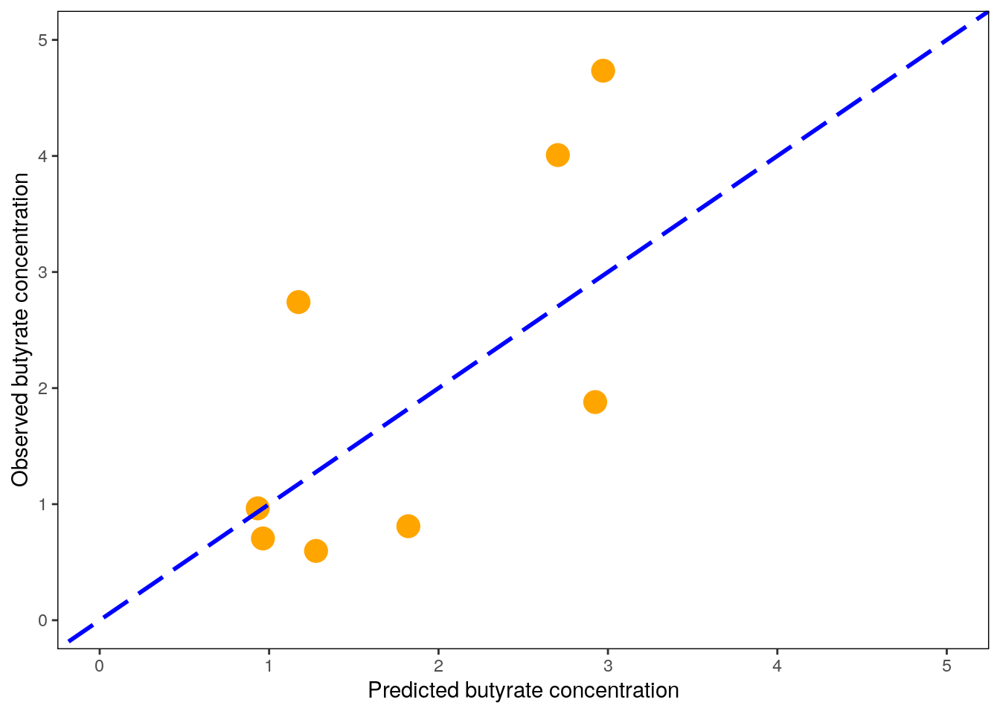
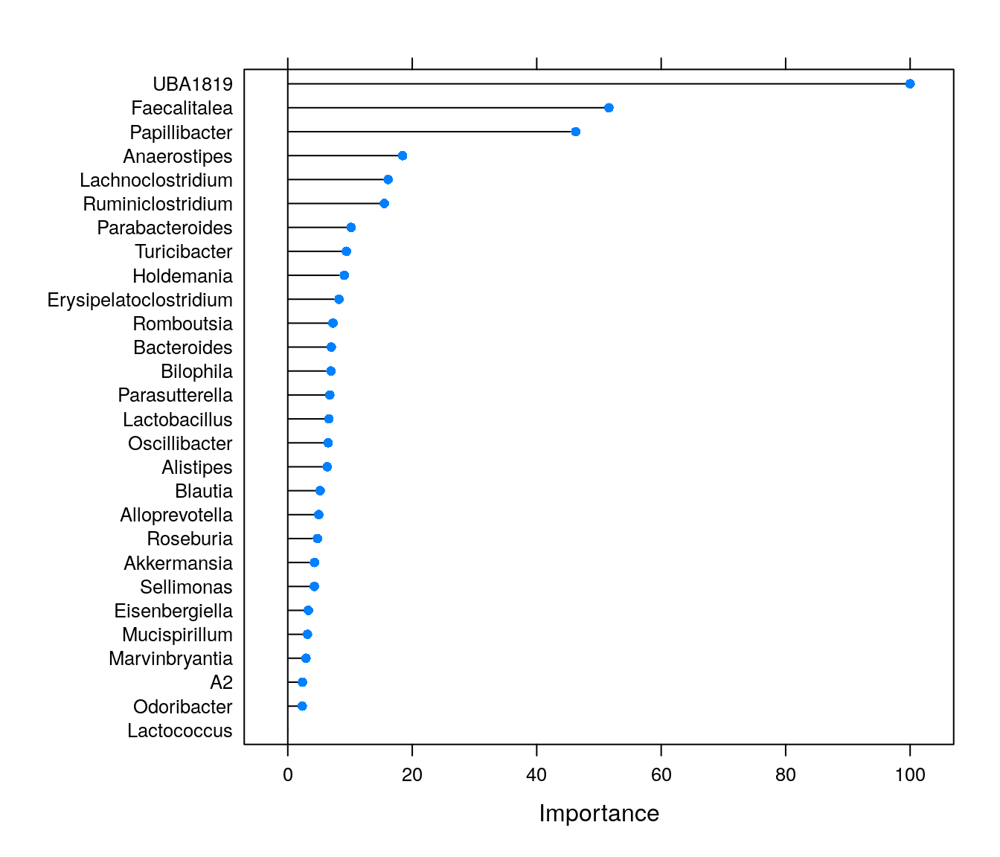
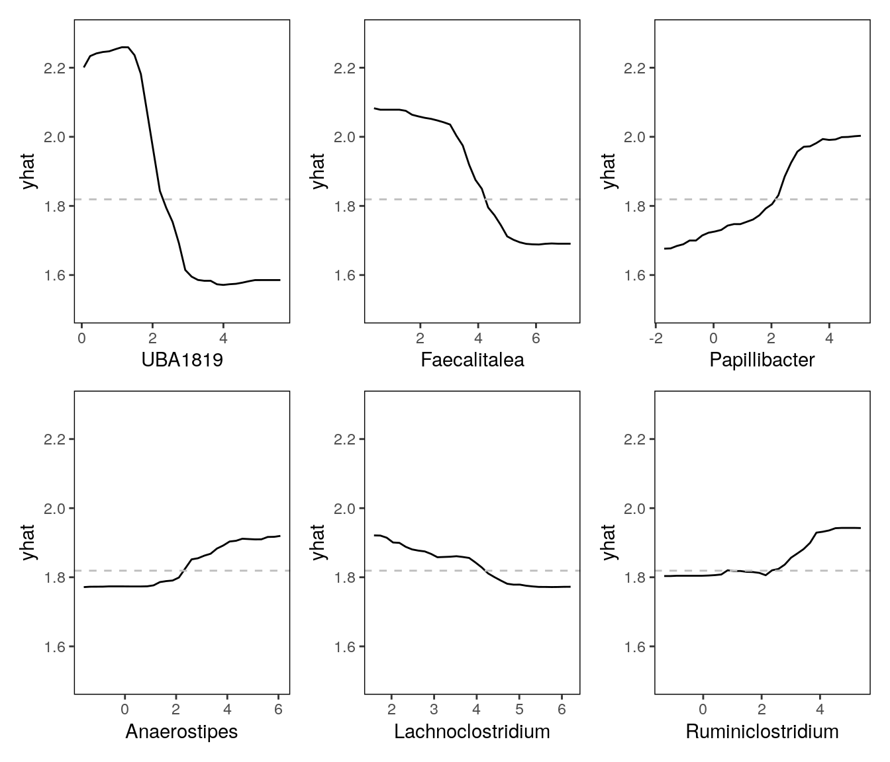
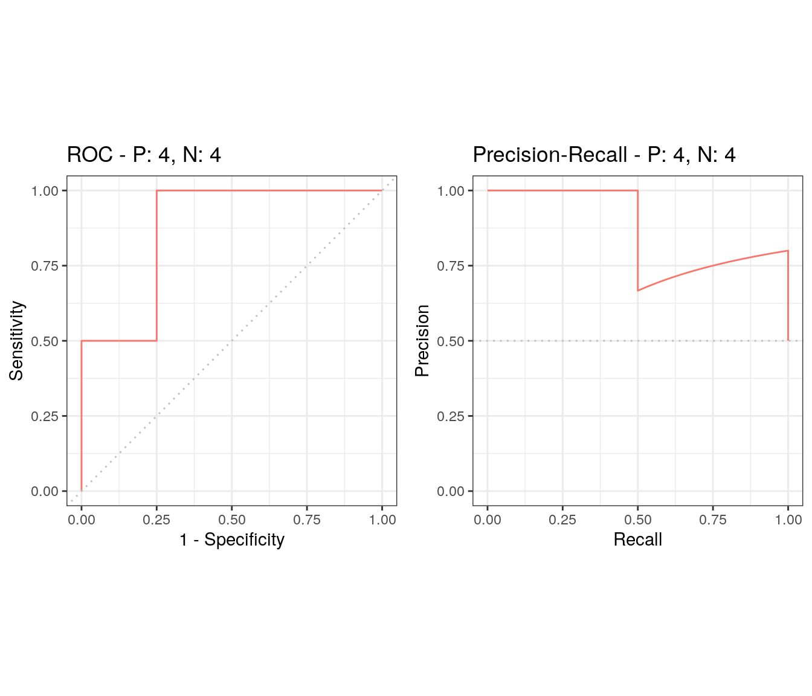
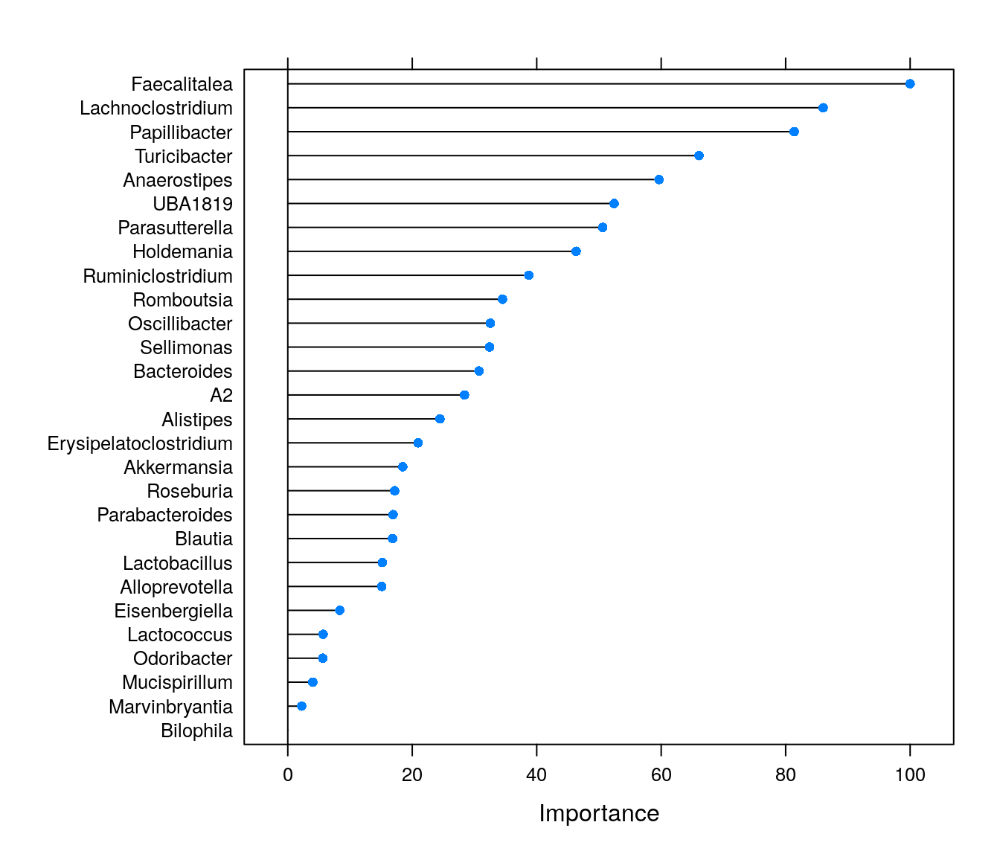

Chapter 8 Supervised learning
Machine learning models are highly flexible and can be used to model differences in samples, similarly to (frequentist) statistics. However, the analysis workflow with these methods is very different from the frequentist analyses. These models learn a function to predict values of the dependent variable, given data. Between different models, the algorithms vary greatly, but generally all regression and classification models can be used similarly in a machine learning workflow.
Machine learning models do not usually output p-values, but they are designed to predict the outcome (value or class) of the dependent variable based on data. Thus, if we want to know how good our model is, we need to divide our data to training and test (or validation) sets. The training set is used to train the model, and the validation set can be then used to test the model. The model can be used to predict the outcome of the dependent variable on the test data, and the predicted values can be compared to the actual known values in the test data. It is important to make sure that there is no data leakage between these two sets, or otherwise the validation is compromised.
In the workshop we use random forests and the caret package to train regression and classification models. The models will predict continuous butyrate concentration or discretized class (high/low butyrate) based on the microbiome composition (why butyrate?).
8.1 Data curation
We first make a data frame which includes only the butyrate concentration and the transformed genus-level microbiome data.
Creating a dataframe for modeling butyrate levels:
butyrate_df <- data.frame(cbind(y, x))
butyrate_df <- butyrate_df[,which(colnames(butyrate_df) %in% c("Butyrate", colnames(x)))]A function in the caret package is used to divide the data once to 80% train and 20% test (validation) sets. This is to prevent data leakage and overestimation of model performance. The 20% test set is only used to conduct the final validation of the models. The number of samples in this case is low (n = 40), but as we can see later on, even 8 samples is sufficient for estimation of the performance. Note that the data is stratified to include a representative distribution of butyrate concentrations on both sides of the split. There is some randomness inherent in the splitting, so set.seed() needs to be used.
library(caret)
set.seed(42)
trainIndex <- createDataPartition(butyrate_df$Butyrate, p = .8, list = FALSE, times = 1)
butyrate_df_train <- butyrate_df[trainIndex,]
butyrate_df_test <- butyrate_df[-trainIndex,]8.2 Regression with random forests
Random forests are a common and flexible ensemble learning method, which are a good starting point when choosing a machine learning model. We are using the ranger implementation of random forests, which runs quite fast compared to its alternatives in R. A wrapper train function from caret is used to conduct a 5-fold cross-validation, repeated 5 times with random partitions inside the training data (for further reading, see documentation). Because of the randomness, seed needs to be set again. Note that the seed does not remain set if you re-run a function with a random component without calling set.seed() first! Specific to random forests, we are also using an option to use permutation importance.
The train function is quite complex, and performs hyperparameter tuning while training the model with cross-validation. The final model included in the object is then trained on all input data and optimized hyperparameters.
set.seed(42)
fitControl <- trainControl(method = "repeatedcv", number = 5, repeats = 5)
rfFit1 <- train(Butyrate ~ ., data = butyrate_df_train,
method = "ranger",
trControl = fitControl,
importance = "permutation")Following the training, we can print out the resulting object, which shows details about the training. We also print out results of the final model.
print(rfFit1)## Random Forest
##
## 32 samples
## 28 predictors
##
## No pre-processing
## Resampling: Cross-Validated (5 fold, repeated 5 times)
## Summary of sample sizes: 24, 26, 25, 28, 25, 25, ...
## Resampling results across tuning parameters:
##
## mtry splitrule RMSE Rsquared MAE
## 2 variance 0.8801800 0.5870278 0.6802341
## 2 extratrees 0.9039197 0.5888711 0.7113279
## 15 variance 0.8604439 0.5806824 0.6573050
## 15 extratrees 0.8678618 0.5773606 0.6682391
## 28 variance 0.8702166 0.5663926 0.6564932
## 28 extratrees 0.8569955 0.5883242 0.6589236
##
## Tuning parameter 'min.node.size' was held constant at a value of 5
## RMSE was used to select the optimal model using the smallest value.
## The final values used for the model were mtry = 28, splitrule = extratrees
## and min.node.size = 5.print(rfFit1$finalModel)## Ranger result
##
## Call:
## ranger::ranger(dependent.variable.name = ".outcome", data = x, mtry = min(param$mtry, ncol(x)), min.node.size = param$min.node.size, splitrule = as.character(param$splitrule), write.forest = TRUE, probability = classProbs, ...)
##
## Type: Regression
## Number of trees: 500
## Sample size: 32
## Number of independent variables: 28
## Mtry: 28
## Target node size: 5
## Variable importance mode: permutation
## Splitrule: extratrees
## Number of random splits: 1
## OOB prediction error (MSE): 0.8650469
## R squared (OOB): 0.4563803We can then compare the metrics produced in training to actual validation metrics. Here, the final model predicts on unseen test data samples, and metrics are calculated against the observed (true) values. We can also plot the predicted values against the observed values, and include a line to show how a perfect model would predict.
test_predictions <- predict(rfFit1, newdata = butyrate_df_test)
print(postResample(test_predictions, butyrate_df_test$Butyrate))## RMSE Rsquared MAE
## 1.1129878 0.4973854 0.9576183# Plot predicted vs observed
pred_obs <- data.frame(predicted = test_predictions, observed = butyrate_df_test$Butyrate)
ggplot(data = pred_obs, aes(x=predicted, y=observed)) + geom_point(size = 5, color = "orange") +
xlab("Predicted butyrate concentration") + ylab("Observed butyrate concentration") +
lims(x = c(0,5), y = c(0,5)) +
geom_abline(linetype = 5, color = "blue", size = 1)+ # Plot a perfect fit line
theme(panel.border = element_rect(colour = "black", fill = NA),
panel.background = element_blank())
All models are wrong, but some are useful. Luckily, our model seems to be somewhat useful. However, we are not yet done with the model. It is important to examine how our model actually works. Even though the random forest can look like a “black box,” we can get much information out on how it ends up making specific predictions.
Feature importance can be used, quite literally, to see which features are important for model predictions. Permutation importance is a metric calculated by shuffling the values of individual feature columns. Permutation importance of a feature will be high if such corrupted data leads to bad predictions of the model. If shuffling a feature does not affect the model performance negatively, its permutation importance will be low.
plot(varImp(rfFit1))
We can see that some genera are highly important for model predictions. The importance values can be highly useful, and these are often used e.g., for feature selection before conducting statistical (or other ML) tests. However, if we only conducted this supervised machine learning analysis, we would not know which features are positively and which ones negatively associated with butyrate levels.
All black box models can however be examined through partial dependence plots. Similarly to validation, we can again utilize the fact that ML models are great at making new predictions. While the inner workings of the model are highly complex, we can assume that changing the values of an important feature affects the model prediction in a specific way. Briefly, partial dependence plots visualize the expected output of the model over the range of an individual input feature (up to 3 features). The pdp package is a versatile implementation for conducting these analyses in R and works directly on models fitted with caret::train().
library(patchwork)
library(pdp)
top_features <- rownames(varImp(rfFit1)$importance)[order(varImp(rfFit1)$importance[,"Overall"], decreasing = TRUE)[1:6]]
pd_plots <- list(NULL)
for (feature in 1:length(top_features)) {
pd_plots[[feature]] <- partial(rfFit1, pred.var = top_features[feature], rug = TRUE) %>% autoplot() +
geom_hline(yintercept = mean(butyrate_df_train$Butyrate), linetype = 2, color = "gray") + # Show the mean of the training data as a dashed line
scale_y_continuous(limits=c(1.5,2.3)) + # Harmonize the scale of yhat on all plots
theme(panel.border = element_rect(colour = "black", fill = NA),
panel.background = element_blank())
print(paste0("Partial dependence of ", top_features[feature]))
}## [1] "Partial dependence of UBA1819"
## [1] "Partial dependence of Faecalitalea"
## [1] "Partial dependence of Papillibacter"
## [1] "Partial dependence of Anaerostipes"
## [1] "Partial dependence of Lachnoclostridium"
## [1] "Partial dependence of Ruminiclostridium"wrap_plots(pd_plots)
8.3 Classification with random forests
In addition to regression, random forests can also be used for classification tasks. While the actual butyrate values might be important for some purposes, it can be expected that it is quite hard to model the concentration throughout its observed range accurately. As a demonstration, we can also discretize a constant variable, and handle the problem as a classification task. Here, we are using the median value of butyrate as a cutoff for high and low butyrate groups - which makes this a binary classification. Other ways to specify a cutoff for discretization are often more justified than just the mean or median. These are usually informed by previous studies and results.
butyrate_cutoff <- median(butyrate_df_test$Butyrate)
butyrate_df_test_2 <- butyrate_df_test
butyrate_df_train_2 <- butyrate_df_train
butyrate_df_test_2$Butyrate <- as.factor(ifelse(butyrate_df_test_2$Butyrate >= butyrate_cutoff, "High", "Low"))
butyrate_df_train_2$Butyrate <- as.factor(ifelse(butyrate_df_train_2$Butyrate >= butyrate_cutoff, "High", "Low"))Training of the model is very similar to regression, but we want to define two options in the trainControl function sent to caret::train(). classProbs = TRUE is used to output classification probabilities instead of the classes themselves. This is required for calculating ROC-AUC values. Also, we are defining a summaryFunction which is used for evaluation and hyperparameter optimization.
set.seed(42)
fitControl <- trainControl(method = "repeatedcv", number = 5, repeats = 10, classProbs = TRUE, summaryFunction = twoClassSummary)
rfFit2 <- train(Butyrate ~ ., data = butyrate_df_train_2,
method = "ranger",
trControl = fitControl,
importance = "permutation")We then measure performance with test data. Here, we need to construct a data frame with specific dimensions as an input for twoClassSummary().
test_predictions_2 <- data.frame(obs = butyrate_df_test_2$Butyrate,
pred = predict(rfFit2, newdata = butyrate_df_test_2),
predict(rfFit2, newdata = butyrate_df_test_2, type = "prob"))
#Print out the metrics
print(rfFit2)## Random Forest
##
## 32 samples
## 28 predictors
## 2 classes: 'High', 'Low'
##
## No pre-processing
## Resampling: Cross-Validated (5 fold, repeated 10 times)
## Summary of sample sizes: 25, 25, 26, 26, 26, 26, ...
## Resampling results across tuning parameters:
##
## mtry splitrule ROC Sens Spec
## 2 gini 0.8622222 0.7733333 0.8433333
## 2 extratrees 0.8877778 0.8133333 0.8450000
## 15 gini 0.8261111 0.7866667 0.7950000
## 15 extratrees 0.8561111 0.8266667 0.8116667
## 28 gini 0.8150000 0.7733333 0.7950000
## 28 extratrees 0.8488889 0.8200000 0.8016667
##
## Tuning parameter 'min.node.size' was held constant at a value of 1
## ROC was used to select the optimal model using the largest value.
## The final values used for the model were mtry = 2, splitrule = extratrees
## and min.node.size = 1.print(rfFit2$finalModel)## Ranger result
##
## Call:
## ranger::ranger(dependent.variable.name = ".outcome", data = x, mtry = min(param$mtry, ncol(x)), min.node.size = param$min.node.size, splitrule = as.character(param$splitrule), write.forest = TRUE, probability = classProbs, ...)
##
## Type: Probability estimation
## Number of trees: 500
## Sample size: 32
## Number of independent variables: 28
## Mtry: 2
## Target node size: 1
## Variable importance mode: permutation
## Splitrule: extratrees
## Number of random splits: 1
## OOB prediction error (Brier s.): 0.163163print(twoClassSummary(test_predictions_2, lev = c("High", "Low")))## ROC Sens Spec
## 0.875 0.750 0.750Often just the ROC-AUC value calculated above can suffice, for example for model comparisons. However, if class distribution is skewed, area under the precision-recall curve (AUPRC) should be used instead (see Fu et al., 2018).
Here is one way to calculate both with the package precrec and plot the curves.
library(MLmetrics)
library(precrec)
aucs <- evalmod(scores = test_predictions_2$Low, labels = test_predictions_2$obs)
print(aucs)##
## === AUCs ===
##
## Model name Dataset ID Curve type AUC
## 1 m1 1 ROC 0.8750000
## 2 m1 1 PRC 0.8722936
##
##
## === Input data ===
##
## Model name Dataset ID # of negatives # of positives
## 1 m1 1 4 4autoplot(aucs)
Finally, we can also extract and plot the feature importance from the binary classification model. It is interesting to compare this result to the importances of the same features in the regression model.
plot(varImp(rfFit2))